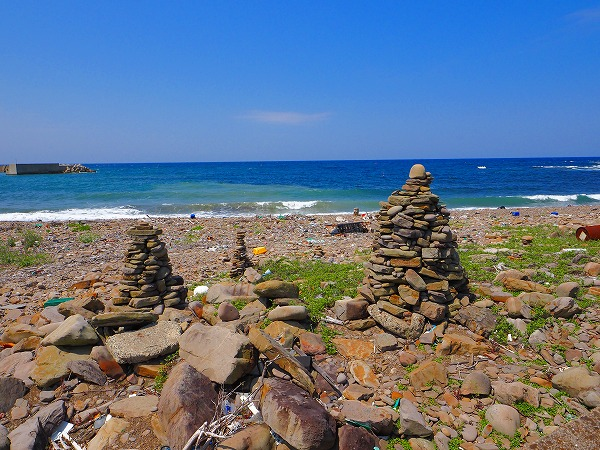
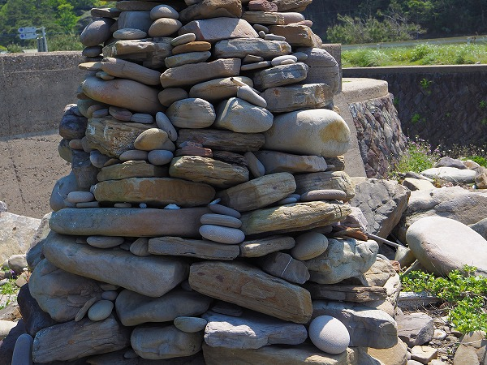

オソロシドコロで危うく命を落としそうになった後、対馬の上島に向かった。
対馬は北側の大きな上島と南側の小さな下島に分かれている。
空港や主要港である厳原港があるのは南側の下島。
オソロシドコロは下島のほぼ最南端。
で、これから向かうのは上島の真ん中辺の西側にある
木坂という集落（地図中の「
ヤマネコ飛び出し注意」って書いてある辺り）。
木坂の集落に行く前に、木坂の墓地を見に行こう。
木坂の墓地は
集落からかなり離れた海沿いにある。
正直言って、なんでこんな辺鄙な所に墓地があるの？というような場所にある。
多分車がないと墓参りにも行けないレベル。
ひょっとしたら埋葬したら墓参りすらしないのでは、と思えるほど集落から離れた寂しい場所にあった。
実際、花が手向けられている墓は全くなかった。
中には朽ちかけたような墓地もあった。
西日本の海沿いの集落では土葬の遺体が波にさらわれて無くなってしまうように、敢えて海沿いに埋葬した、という話はあちこちで聞いたことがある。
この木坂の墓地もそういう意味があるのかもしれない。
波に洗われた石が石碑として置かれていた。
そんなこんなで木坂の海岸沿いに来た。

その海岸には石積みの塔が並んでいた。
コレを
ヤクマの塔というのだ。
ヤクマの塔とはヤクマの祭りに造られるものだ。
ヤクマ祭りとは毎年旧６月上旬の初午に穀霊（主に麦）を祀る祭礼である。
海の神に豊漁、航海安全を祈願する祭りという説もある。
先程の八町郭同様平らな石を積み上げて塔を形成している。
このヤクマ祭り、基本的にはこの島のメインの穀物である麦の収穫祭なのだが、
天道信仰に由来するものだとも言われている。
この浜のすぐ近くにある海神神社の境内にある天道を祀る祭りとされているのだとか。
対馬の天道信仰とは韓国の天道教と日本の山岳信仰がミックスしたものであり、更に
天道法師への個人的崇拝が入り混ざった信仰だ。
特に天道法師とその母への崇拝はこの信仰を際立たせるもので、それぞれを祀る塚は強度に神聖視されていることはオソロシドコロの項で述べた。
ここ木坂のヤクマの塔も今では3本あるが、基本的には2本だったという。
それは
天道法師を祀る塔とその母を祀る塔だったという。

いずれにせよ、この島の天道信仰に関わる聖地や神社、そして祭礼には必ず石積みの塔が登場する。
素朴ながら信仰の決心のようなものを感じざるを得ない力強い姿だ。
海は美しいが浜はたくさんの漂流物に埋め尽くされていた。
場所的にほとんど韓国からの漂流物なのだろう。
浜の近くには石積みの建物があった。
これは藻小屋、あるいは船小屋といい、海の藻を乾燥させて畑の肥料にするための小屋なのだ。
これは復元された展示用の小屋だが、その石積みのレベルの高さは只々唸るばかりだ。
中に入ってもほとんど光が漏れることがない、それ程隙間なく石が積まれているのだ。
次に訪れたのは木坂から数キロ北上した
青海の集落。
集落の背後の山には
恐ろしいほどの傾斜の段々畑が広がっている。
耕作地の少ないこの地はここまでしなければ生きていけないのだ。
ある意味壮絶な光景である。
畑では蕎麦などが栽培されているという。
その青海の集落に入って驚いた。
高床式の倉庫がいくつも並んでいたのだ。しかも現役で。

ここで生活している方には大変失礼なのは重々承知の上で敢えて言わせてもらうが、令和の日本とは思えない、時空を超えたような風景が次から次へと現れて、正直悶絶しそうになった。
この集落が伝建地区（伝統的建造物郡保存地区）じゃないのが信じられない！
思いつく限りの比喩が全部コンプラ的にダメっぽいのが返す返すも残念である。
ニッポンの原点そのもののような凄い集落だった（もちろんポジティブな意味で、です）。
それだけに、今この姿を奇跡的に残し続けているこの集落を何らかの形で保存or記録を講ずることを関係各位に提言させていただきます！
木坂では観光用の復元された藻小屋が、
青海では現役で使われていた。しかも幾つも。
久し振りに
「ジャパン、凄げえな…」と心底震えましたよ。
その青海の集落の海沿いには墓地が広がっている。
この青海の集落は埋め墓と参り墓が別の場所にある
両墓制の習俗を近代まで伝えていた。
両墓制とは民俗学上での用語で、主に土葬の頃の墓制で、埋葬地と墓の場所が異なるケースのことを言う。
つまり
遺体を埋める場所とは別の場所に墓石を建てる習俗のことなのだが、おもに関西から関東に見られる習俗で、九州（や東北）ではほとんど見られない。
先程の木坂含めて他の対馬の集落でも見られない珍しい習俗を今に伝える場所なのだ。
今ではほとんどが埋葬地と墓が一体になっているが、中にはかつての両墓制だった頃の埋葬風景を色濃く残している墓地もある。
例えばこの墓。
小さな犬小屋のような祠があるが、これは埋葬地を示す霊屋といわれるものである。
かつて土葬だった頃はこの地に遺体を埋葬し、その上に霊屋を設けたのだ。
霊屋の中にはハカジルシとして丸い石が酒と共に置かれていた。
他にも石塔墓でない墓として埋葬地に平たい石を設置し、その上にハカジルシとしての石を置く墓が見られた。
埋葬地に平たい石を置くのは長崎県内では何カ所かで見られるし、縦長の自然石を置くのは西日本各地で見られる墓の原初的な形だ、
その意味で、両墓制自体は九州において異質な存在かも知れないが、日本海の墓制や長崎県の墓制を考えると必ずしも珍しいだけで済ませることは出来ない文明の連続性を感じさせる墓の姿であった。
おっと、前置きが長くなりました。
ヤクマの塔である。
やはり木坂同様、海岸沿いに3つの塔が立っていた。

ここもかつては2本の塔だったという。
青海の集落は日当たりの良い
日向組とそうでない
日陰組に分かれており、それぞれの代表がそれぞれ一基づつ塔を建てる事になっていた。
前年に建てられた塔はシケや台風があると崩れてしまうのだが、そうでない場合はそれを崩して新しい塔を建てることになる。
去年の厄を溜め込んだ依り代を破壊して新しい神の依り代を作る。
何となく東北地方や新潟、茨城における大人形様のようではないか。
海辺から少し上を見上げたらヤクマの塔が建っていた。
これは古い塔なのだろうが、眼下の新しいヤクマの塔を見守っているかのような頼もしさがあった。
最後に全然関係ないが、厳原の街の真ん中にある浜殿神社。
巨木にエルボー喰らった状態で鳥居がぶっ壊れてます…。
という訳で、短い対馬の滞在もタイムアップである。
まだまだ天道信仰やヤクマの塔、オソロシドコロなど判らない部分がたくさんあるし、行けなかった所もたくさんあったが、楽しみは後にとっておくことにしよう。
さらばじゃ、対馬よ。
参考文献
対馬天道信仰遺跡調査記（1） 山岸靖治、山本義孝 豊日史学 宇佐文化62 1998.03.
ふるさととは何か/臥蛇、対馬、湯布院を行く
傳統研究10号 平成14年 アジア傳統研究所 ・対馬のヤクマ 岡田啓助